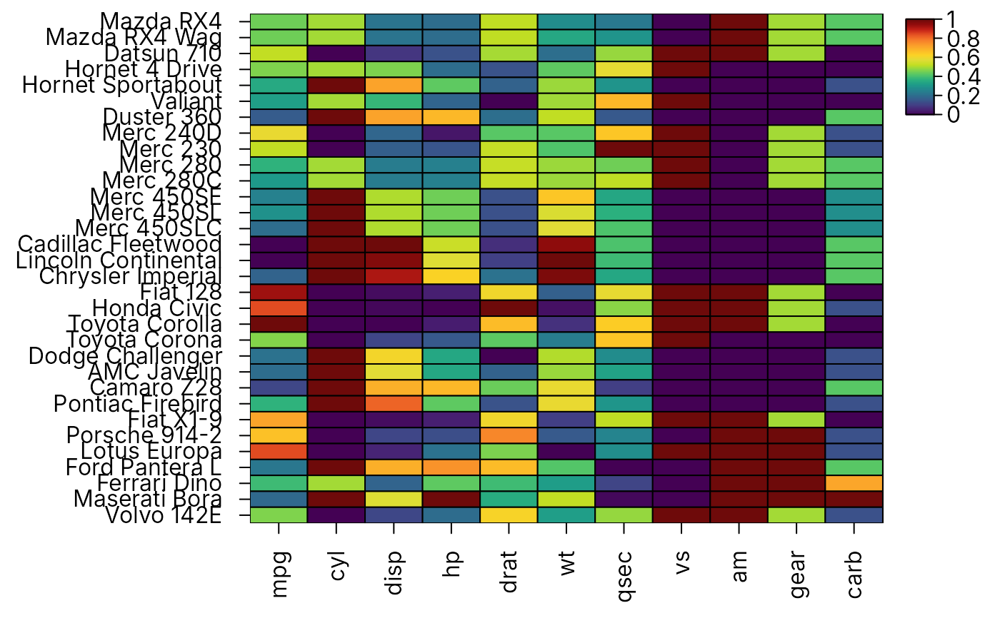

Save high resolution images
Usage
heat_map_save(
save_as,
width = 7,
height = 7,
units = "in",
res = 300,
multiple = FALSE,
layout = NULL,
x = NULL,
...
)Arguments
- save_as
name of the file to which the plot should be saved (including the file extension). Supported file formats include png, tiff (or tif), jpeg (or jpg), svg and pdf. File extensions are not case sensitive.
- width
numeric indicating the width of exported plot in
units, set to 7 by default for image with width of 7 inches.- height
numeric indicating the height of the exported plot in
units, set to 7 by default for image with height of 7 inches.- units
units to be used to set plot size, can be either pixels (
"px"), inches ("in"), centimetres ("cm") or millimetres ("mm"). Set to"in"by default. Units cannot be altered forsvgandpdfgraphics devices.- res
resolution in dpi, set to 300 by default.
- multiple
logical indicating whether multiple pages should be saved to separate numbered files, set to
FALSEby default.- layout
a vector or matrix defining the custom layout of the plot to be created using
heat_map_layout, set to NULL by default.- x
optional
heat_mapobject returned byheat_map(or a list ofheat_mapobjects to fill alayout) to draw and save immediately. When supplied, the graphics device is closed once the heatmap(s) have been drawn and there is no need to callheat_map_complete(). Any activeheat_map_custom()layout and the current graphics device are left unchanged. Without alayout, each heatmap is drawn on a separate page, so several heatmaps require a pdf file ormultiple = TRUE.- ...
additional arguments for the appropriate
png(),tiff(),jpeg(),svg()orpdfgraphics devices.
Examples
# \donttest{
# Save Heatmap
heat_map_save(file.path(tempdir(), "Heatmap.png"),
height = 7,
width = 5)
# Construct Heatmap
heat_map(iris[1:10,],
scale = "column",
title = "Iris Heatmap",
axis_label_x = "Plant Parameter",
axis_label_y = "Row ID")
#> Applying range scaling to each column...
# Save an existing heatmap
hm <- heat_map(mtcars, scale = "column", popup = FALSE)
#> Applying range scaling to each column...

heat_map_save(file.path(tempdir(), "mtcars.pdf"), x = hm)
# }